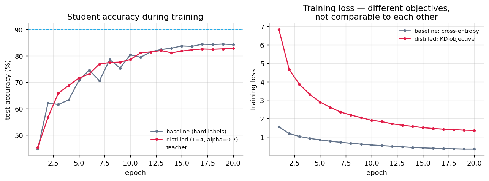
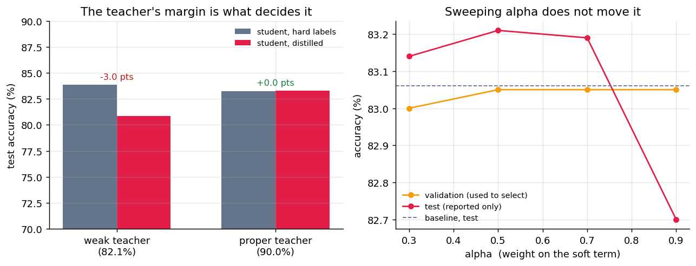

Train a 289K-parameter CNN twice on the same images, same seed, same schedule. Change one thing: whether it matches the hard label or a fine-tuned ResNet-50's soft distribution. The teacher works — 90.0%, 6.8 points clear of the student. The gain is +0.04 points. This is the account of why, and of the two experiments that proved it wasn't an accident.
Standard advice for ResNet on CIFAR: replace the stem, because a 7×7 stride-2 convolution plus max-pool reduces a 32×32 image to 8×8 before the first residual block. That is right when training from scratch and wrong when fine-tuning a pretrained model — the replacement stem is randomly initialised, so every pretrained block downstream receives features it has never seen.
Distilling from it cost 3.0 points — which is exactly right. Soft targets from a model worse than you are are worse than the labels. The fix: keep the pretrained stem and upsample CIFAR to 64×64 instead, so every pretrained weight does the job it was trained for. It is also ~2.8× cheaper per step, which paid for 8 epochs instead of 3. Teacher: 82.1% → 90.0%.
| Model | Parameters | Test accuracy |
|---|---|---|
| ResNet-50 teacher — pretrained stem, 64×64 inputs | 23,528,522 | 90.03% |
| Student CNN — baseline, hard labels | 288,746 | 83.26% |
| Student CNN — distilled (T=4, α=0.7) | 288,746 | 83.30% |
Full 10,000-image test set, final weights — not the best epoch, which would be a peek at the test set.

α = 0.7 puts most of the weight on matching a distribution a 289K-parameter network can only partly represent. Worth testing rather than assuming — with a protocol that makes the answer mean something.
| Run | Validation | Test |
|---|---|---|
| baseline (no KD) | 82.45% | 83.06% |
| distilled, α = 0.3 | 83.00% | 83.14% |
| distilled, α = 0.5 | 83.05% | 83.21% |
| distilled, α = 0.7 | 83.05% | 83.19% |
| distilled, α = 0.9 | 83.05% | 82.70% |
Validation picked α = 0.5, scoring 83.21% against the baseline's 83.06% — +0.15 points. Four values of α, all within half a point. α is not the problem.

The teacher's distribution over 10 classes encodes structure a three-block CNN with a 128-wide penultimate layer has no capacity to reproduce. Past some point the KL term asks for something unreachable — and weighting it harder (α = 0.9, the one run that came out worse) just spends more of a fixed budget on it.
The cached logits were computed on the clean image; the student trains on a random crop and a 50% horizontal flip. Roughly half the time it is told to match the teacher's answer for a picture it is not looking at. Beyer et al. (2022) make exactly this the central point — distillation works when teacher and student see identical views, and needs long schedules to pay off. This implementation satisfies neither.
It is that a teacher with a real margin is necessary but not sufficient. Experiment 1 shows what happens without the margin (-3.0 points). Experiments 2 and 3 show the margin alone buys nothing.
pip install -r requirements.txt python distill.py # teacher, logit cache, both students -> runs/results.json python sweep.py # the alpha sweep with the validation split
CPU only. Every number on this page is read out of results.json,
results_weak_teacher.json and sweep_results.json. None were
typed in by hand.